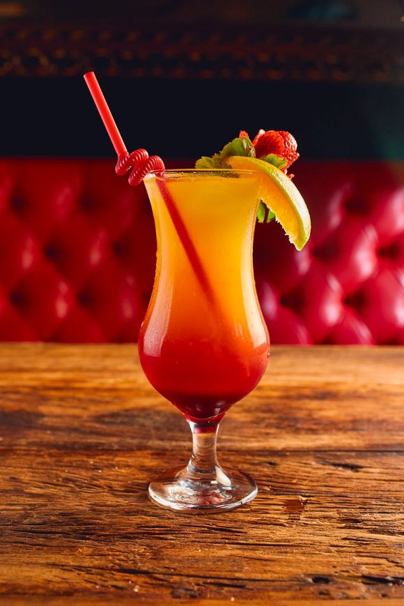

Ingredientes
- 40 ml de vodka
- 20 ml de licor de pêssego (como o Peach Schnapps)
- 40 ml de suco de cranberry (ou suco de groselha)
- 40 ml de suco de laranja
- Gelo
Instruções:
- Em uma coqueteleira, adicione a vodka, o licor de pêssego, o suco de cranberry e o suco de laranja.
- Coloque gelo na coqueteleira até a metade e agite bem por cerca de 10 segundos.
- Coe a mistura para um copo baixo (old fashioned ou copo de rocks) com gelo.
- Decore com uma fatia de laranja ou uma cereja, se desejar.